Sharing Science Beyond the Laboratory
Science creates the greatest impact when it is shared. Through documentaries, interviews, conference presentations, workshops, public lectures, and community outreach, I work to make fisheries and marine science accessible to diverse audiences and inspire informed environmental action.
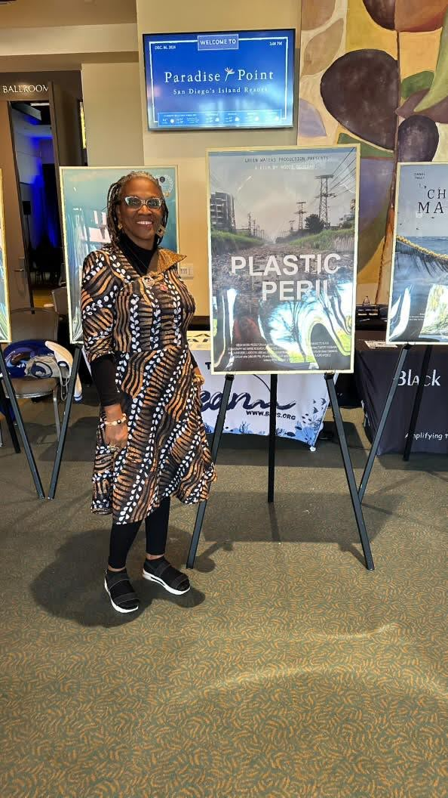
Featured Media
Selected documentaries, interviews, presentations, and public engagement activities.
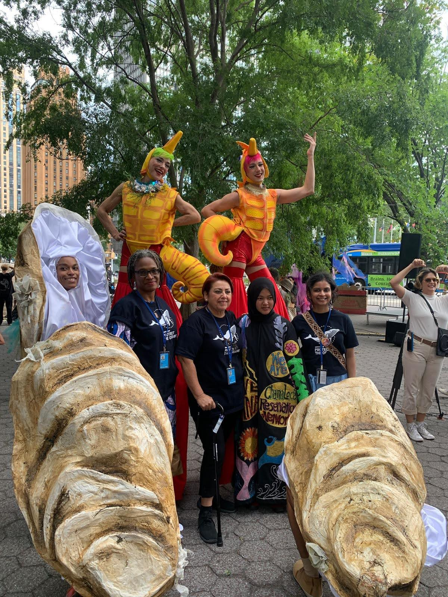
Plastic Peril
A documentary highlighting the growing challenge of plastic pollution and the importance of science-driven environmental solutions.
Watch →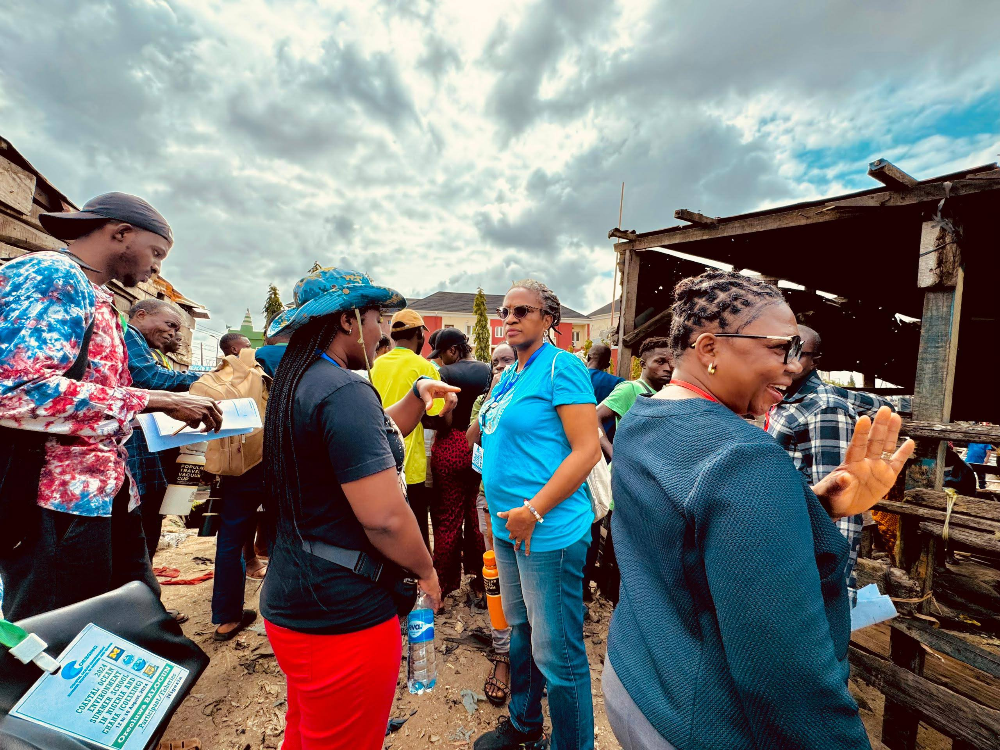
International Conference Presentations
Highlights from keynote lectures, invited talks, and scientific conferences.
View Gallery →
Media Interviews
Interviews discussing fisheries, marine pollution, environmental sustainability, and science communication.
Watch →Photo Gallery
A visual journey through field research, scientific conferences, laboratory activities, stakeholder engagement, and community outreach.
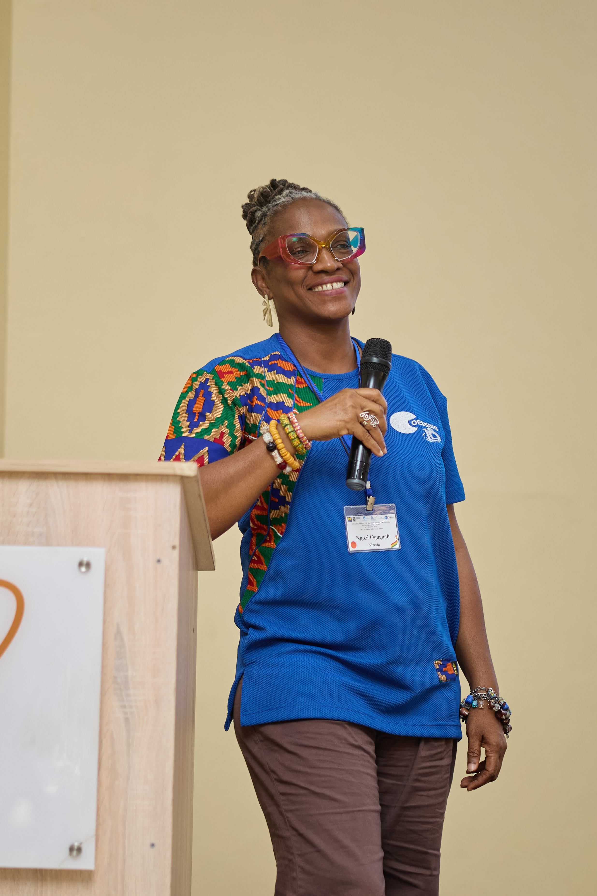
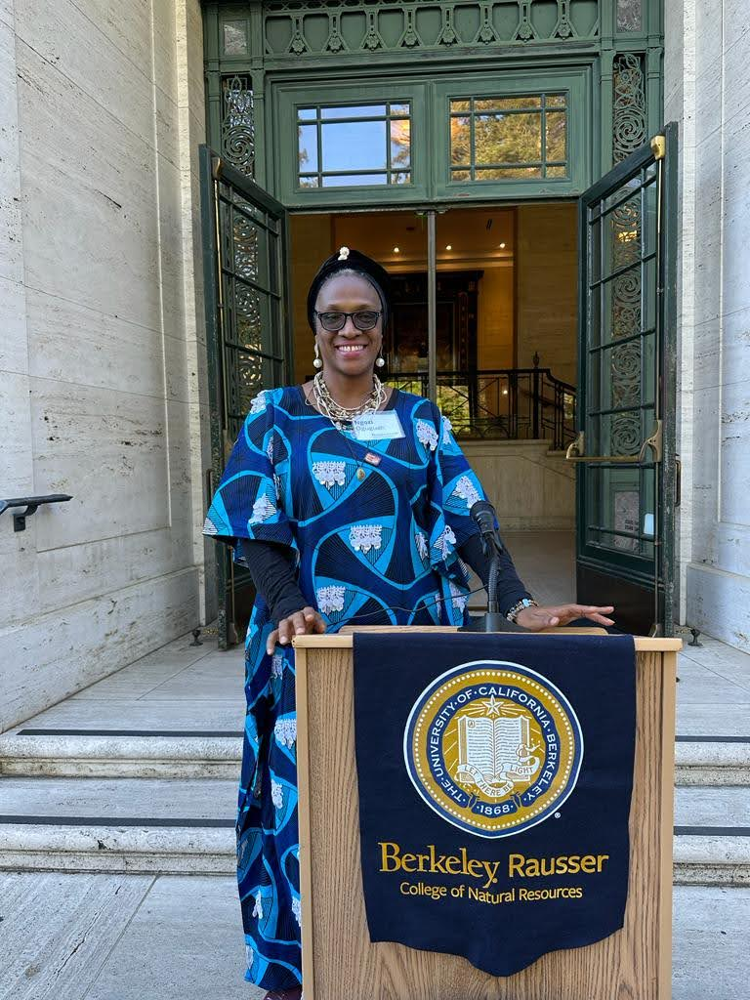
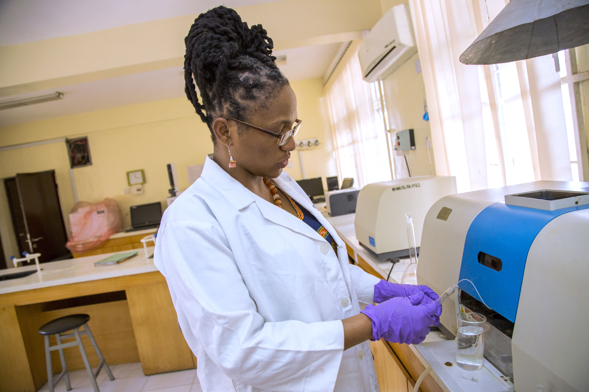
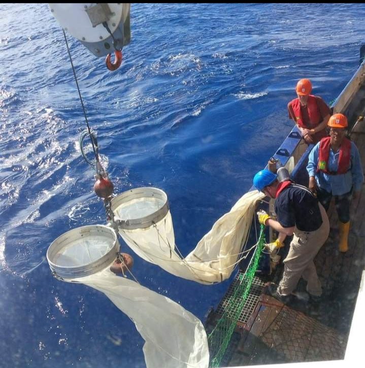
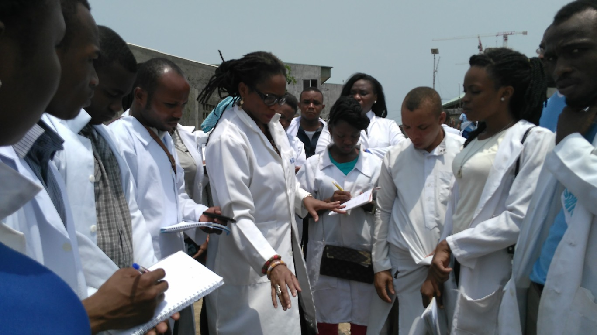
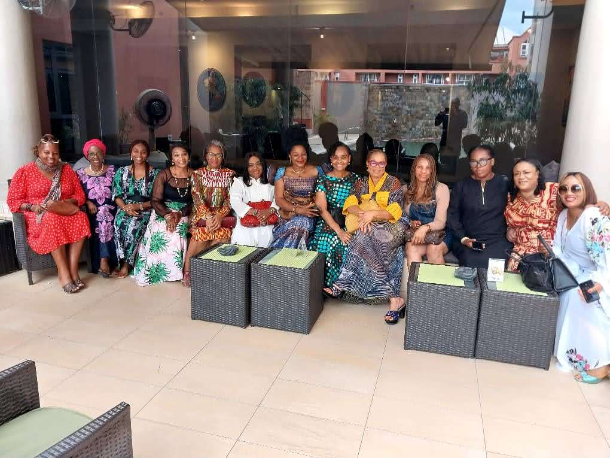
Videos & Documentaries
Selected documentaries, interviews, webinars, conference recordings, and educational videos highlighting my research and public engagement.
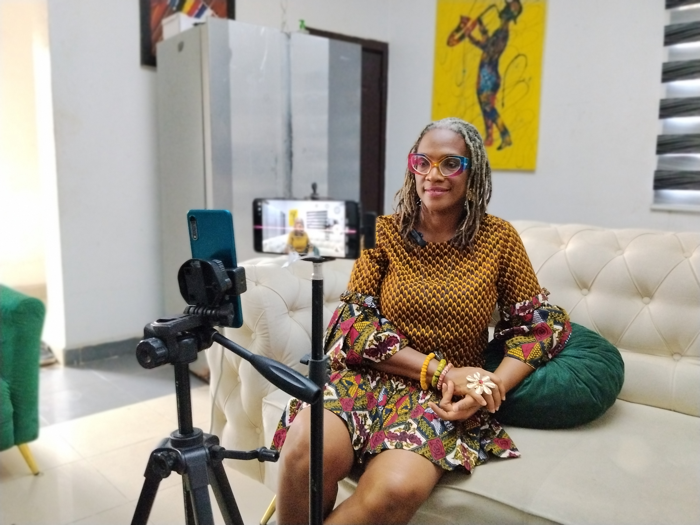
Plastic Peril
A documentary exploring the impacts of plastic pollution and the need for science-based environmental action.
Watch Video →
Conference Presentations
Recordings of keynote presentations, invited lectures, and scientific conference sessions.
Watch Talks →Conference & Event Highlights
Snapshots from conferences, workshops, seminars, and scientific meetings where I have presented research, chaired sessions, or participated in professional discussions.
Scientific Conferences
International and national conferences advancing fisheries and marine science.
Workshops
Capacity building, research training, and stakeholder engagement workshops.
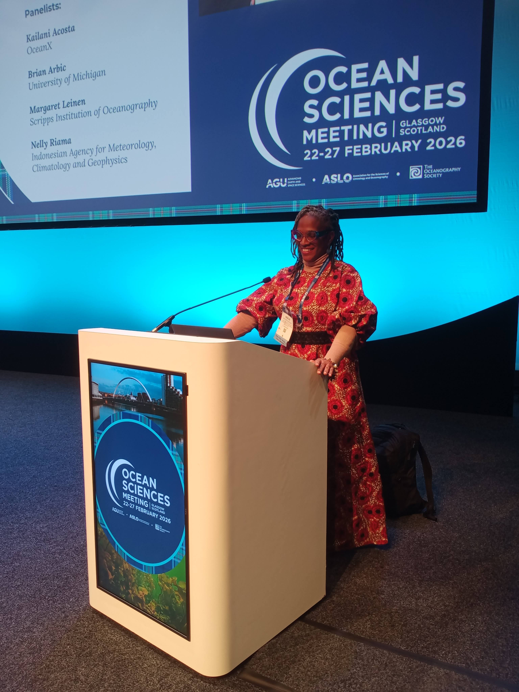
Panel Discussions
Sharing expertise with scientists, policymakers, and environmental practitioners.
Community Outreach
Working alongside students, coastal communities, government agencies, NGOs, and development partners to promote environmental awareness and encourage sustainable stewardship of aquatic ecosystems.
Education & Awareness
Supporting environmental education through schools, universities, public lectures, and science outreach activities.
Community Engagement
Collaborating with local communities and stakeholders to translate scientific knowledge into practical environmental action.
Media Coverage
Selected news features, interviews, podcasts, documentaries, and articles highlighting my research, scientific leadership, and contributions to environmental sustainability.
News Articles
Coverage of research findings, environmental initiatives, and scientific achievements in newspapers and online media.
Read Articles →Television & Radio
Interviews discussing fisheries, marine pollution, environmental sustainability, and science communication.
Watch & Listen →Podcasts & Webinars
Guest appearances sharing insights on ocean science, pollution research, and sustainable fisheries.
Explore →Media Resources
Resources for journalists, conference organisers, collaborators, and event hosts.
Short Biography
A professional biography suitable for conference programmes, event websites, and media features.
Download →Speaker Photograph
High-resolution official photographs for conference publicity and media use.
Download →Media & Collaboration Enquiries
For interview requests, media features, documentary collaborations, conference invitations, public lectures, podcasts, workshops, or expert commentary on fisheries, marine pollution, plastic pollution, microplastics, and environmental sustainability, please get in touch.